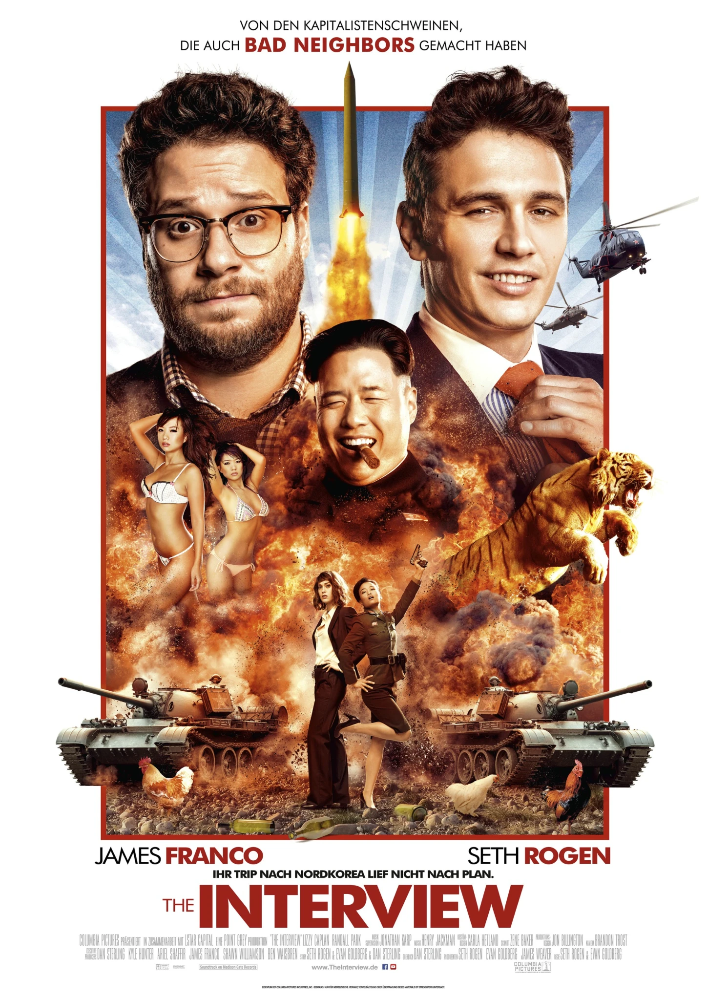

Sony Hack, 2014
Hackers will hack, no matter what!!!
-- hackers thing _/{"-"}_/
Intro
Hey, you amazing Hackers. In today’s Blog story we will see the Legendary Sony HACK!!
Five years ago in late November 2014, the World was shocked by the hacking of one of the largest film studios in the World the Sony Pictures. The hacker group called themselves as “Guardians of Peace” #GOP As a subsidiary of Sony International, Sony Pictures finances and distributes films around the world, and with a potentially very offensive movie to the Dictator of North Korea Kim Jong Un regime nearing release,it’s no surprise that when hacked, North Korea was the first to blamed.
What was the hack?
The hack was massive data leakage including all the internal data, unreleased films, private mails, some disgusting mails of big producers, private info of Employees and many many more. The hackers claimed that they had complete access to all the internal network of Sony Pictures since a year back. The attack was possible due to backdoor in the internal system leaking all the info to hackers.
What backdoor is?
The backdoor is type of attack where hacker gain access to the system of Victim remotely without being necessary to be physically in touch with the system itself. The Victims system continuously sends connection request to the attacker so that attacker can easily get to connect and execute any attack she wants. This backdoor was send in the form of Social Engineering mail, when the employee open the mail, backdoor got executed on it’s system.
Why the attack took place?
It was considered that the movie on Kim Jong Un was based on how badly and crucial he rules North Korea and its people. No other company took risk to make the movie when Writer went for deal, it was just Sony Pictures who came forwarded and Produced the movie.

The Interview is a comedy, produced by Sony, about a pair of journalists, played by Seth Rogen and James Franco, who score an interview with North Korean leader Kim Jong Un. Before the trip, they are contacted by the Central Intelligence Agency, which asks them to not just interview Kim but kill him. The movie includes a graphic, slow-motion sequence where Kim is killed when his helicopter explodes, engulfing his body in a fireball. An earlier cut of the scene showed his head exploding, though this was mostly edited out later.
Attack
Few days prior on November 24, 2014, Release of Movie “The Interview” Sony Employees got a mail containing threatening message saying “If you released the movie we would leak all your information to public” In the Picture below, you can see the message received by Sony Pictures.
They Obviously did ignored the Message for given deadline & the Consequences were faced in which lot of Private mails and information was leaked which caused to reputation of Sony Pictures.
Learnings
At the end many hackers were caught and many were blamed including hacker responsible for “WannaCry virus”. North Korean people raised the protest for ban of Movie saying “Their leader already treats them as slaves, and due to release of Movie he would hares them more” but UN refused to the request saying “This is not how Freedom works”
At the End, I would only consider that no Company is safe, the only way to be safe is to take care of our social life and be conscious about what we share on Social media üôÇ
© hackkeencyber